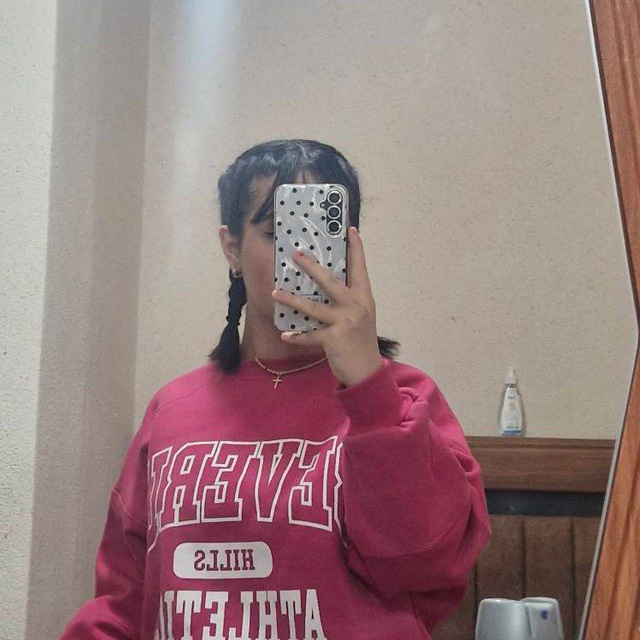

Every part of her feels like home, just like every moment with her feels like a dream.

Sara is not just beautiful but also the kindest person. She has a love for black and white but can make pink look amazing too!
Her favorite snacks are:
Sara’s prettiness, charm, and her adorable pout when she’s mad at me make her the most special person in my life.
Maggie is Sara’s loyal companion and a bundle of joy. Stay tuned for pictures and videos of Maggie soon!
Pictures that capture Sara’s beauty and essence:
Social Media